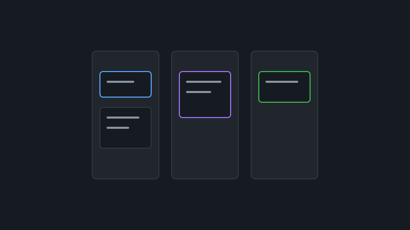
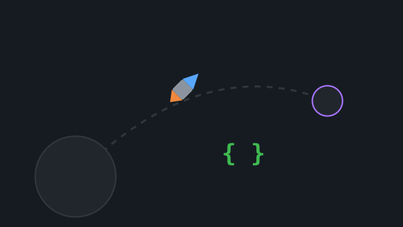
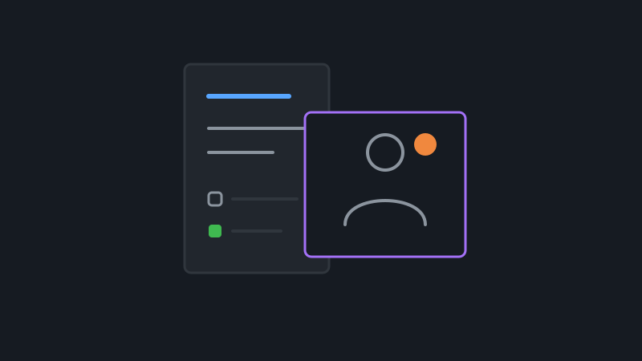
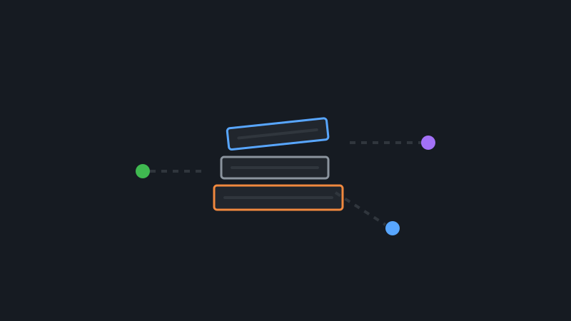
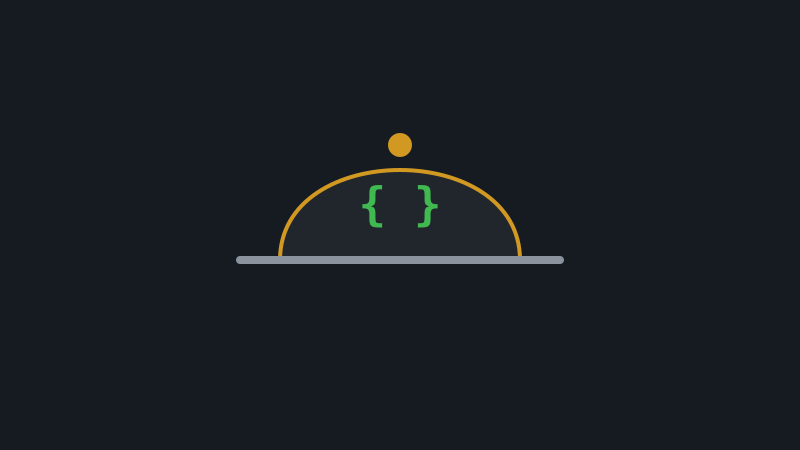
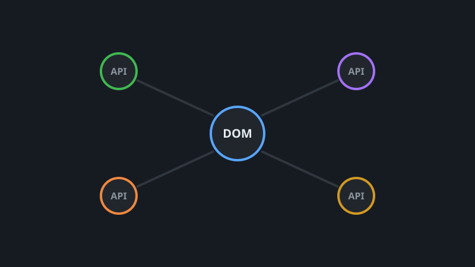

Tablero de tareas (full stack)
Aplicación tipo producto: autenticación JWT, roles, tableros y carga de archivos. Estructura y boilerplate del backend acelerados con asistencia de IA.
Angular 13 · Node.js · MongoDB · JWT · IA

Desarrollador de software · IA Dev · Frontend
Portafolio público con proyectos de front, back, bases de datos y pruebas automatizadas. Gran parte de estos proyectos incluye experimentación y desarrollo asistido por IA (Copilot, LLMs) para agilizar la arquitectura y estructurar código. Código en GitHub (@Juli21v).
Seis trabajos que representan full stack, calidad de API, SPA y datos en vivo.

Aplicación tipo producto: autenticación JWT, roles, tableros y carga de archivos. Estructura y boilerplate del backend acelerados con asistencia de IA.
Angular 13 · Node.js · MongoDB · JWT · IA

API ficticia con validación estricta de entrada. Los tests de Playwright y la configuración de CI fueron diseñados experimentando con IA.
TypeScript · Playwright · Node.js · IA Copilot

SPA con rutas, login y gestión de tareas. Componentes de Angular Material refactorizados y optimizados mediante prompt engineering.
Angular 13 · Material · TypeScript · Prompt Eng

CRUD sobre MongoDB con archivado lógico. Código reestructurado y limpio empleando IA para aplicar buenas prácticas de Express.
Node.js · Express · MongoDB · IA Assist

Servicio para productos del menú en MongoDB. Parte de la validación y esquemas Mongoose se generó iterando con prompts a la IA.
Node.js · Mongoose · MongoDB · IA Prompting

Páginas que consumen JSON de APIs y manipulan el DOM de forma directa. La base de los scripts se optimizó explorando soluciones con IA.
JavaScript · Fetch API · HTML · IA
Otros proyectos y prácticas disponibles en GitHub. Clic para abrir el código.